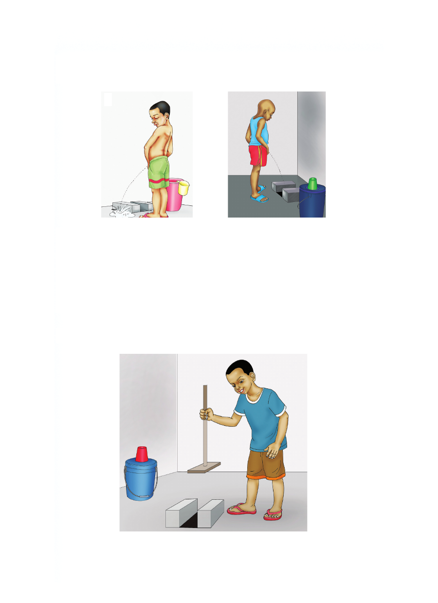

Matumizi sahihi ya choo
Picha ya mtoto yupi anatumia choo kwa usahihi?
1 2
Choo ni muhimu kwa matumizi ya binadamu. Choo kitumike
kwa usahihi ili kuepuka magonjwa. Magonjwa hayo ni kama
vile kipindupindu, kuhara na minyoo. Pia choo bora husaidia
kuhifadhi mazingira na vyanzo vya maji. Kuna aina mbalimbali
za vyoo. Mfano kuna vyoo vya shimo na vya kuvuta. Vyoo
vya kuvuta hutiririsha maji yanayoondosha kinyesi.
Hatua sahihi za matumizi ya choo
Matumizi sahihi ya choo Picha ya mtoto yupi anatumia choo kwa usahihi? 1 2 Choo ni muhimu kwa matumizi ya binadamu. Choo kitumike kwa usahihi ili kuepuka magonjwa. Magonjwa hayo ni kama vile kipindupindu, kuhara na minyoo. Pia choo bora husaidia kuhifadhi mazingira na vyanzo vya maji. Kuna aina mbalimbali za vyoo. Mfano kuna vyoo vya shimo na vya kuvuta. Vyoo vya kuvuta hutiririsha maji yanayoondosha kinyesi. Hatua sahihi za matumizi ya choo